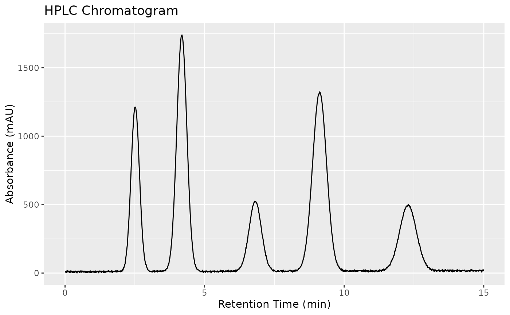

Simulated HPLC-UV chromatogram data for demonstration of chromatographic preprocessing and peak analysis. The dataset represents a separation of five phenolic compounds (caffeine, theobromine, catechin, epicatechin, and quercetin) with 20 samples of varying concentrations.
Format
A tibble with 30,020 observations and 8 variables:
- sample_id
Integer sample identifier (1-20)
- time_min
Retention time in minutes (0-15, 0.01 min resolution)
- absorbance_mAU
UV absorbance signal in milli-absorbance units
- caffeine_conc
True caffeine concentration (mg/L) for calibration
- theobromine_conc
True theobromine concentration (mg/L)
- catechin_conc
True catechin concentration (mg/L)
- epicatechin_conc
True epicatechin concentration (mg/L)
- quercetin_conc
True quercetin concentration (mg/L)
Source
Simulated data generated for the measure package. See
data-raw/generate_datasets.R for the generation script.
Details
The chromatograms include realistic features such as:
Gaussian peak shapes with compound-specific widths
Baseline drift
Instrumental noise
Small retention time variations between runs
Concentration-dependent peak heights
This dataset is useful for demonstrating:
Baseline correction methods
Peak detection and integration
Calibration curve construction
Retention time alignment
The peaks appear at approximately these retention times:
Caffeine: ~2.5 min
Theobromine: ~4.2 min
Catechin: ~6.8 min
Epicatechin: ~9.1 min
Quercetin: ~12.3 min
See also
sec_chromatograms for SEC/GPC chromatography data
Examples
data(hplc_chromatograms)
# View structure
str(hplc_chromatograms)
#> tibble [30,020 × 8] (S3: tbl_df/tbl/data.frame)
#> $ sample_id : int [1:30020] 1 1 1 1 1 1 1 1 1 1 ...
#> $ time_min : num [1:30020] 0 0.01 0.02 0.03 0.04 0.05 0.06 0.07 0.08 0.09 ...
#> $ absorbance_mAU : num [1:30020] 6.39 7.14 11.21 9.25 5.82 ...
#> $ caffeine_conc : num [1:30020] 141 141 141 141 141 ...
#> $ theobromine_conc: num [1:30020] 115 115 115 115 115 ...
#> $ catechin_conc : num [1:30020] 47.2 47.2 47.2 47.2 47.2 ...
#> $ epicatechin_conc: num [1:30020] 93.1 93.1 93.1 93.1 93.1 ...
#> $ quercetin_conc : num [1:30020] 45.7 45.7 45.7 45.7 45.7 ...
# Get a single chromatogram
library(dplyr)
chrom_1 <- hplc_chromatograms |> filter(sample_id == 1)
# Plot (if ggplot2 available)
if (requireNamespace("ggplot2", quietly = TRUE)) {
library(ggplot2)
ggplot(chrom_1, aes(x = time_min, y = absorbance_mAU)) +
geom_line() +
labs(x = "Retention Time (min)", y = "Absorbance (mAU)",
title = "HPLC Chromatogram")
}
